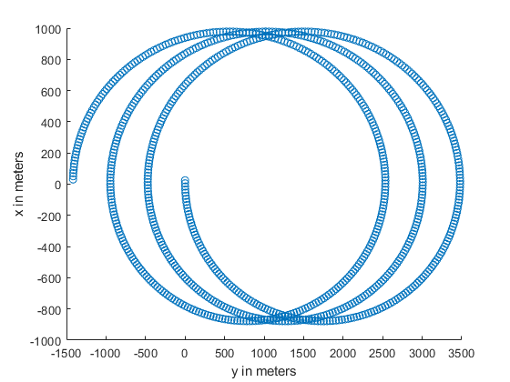
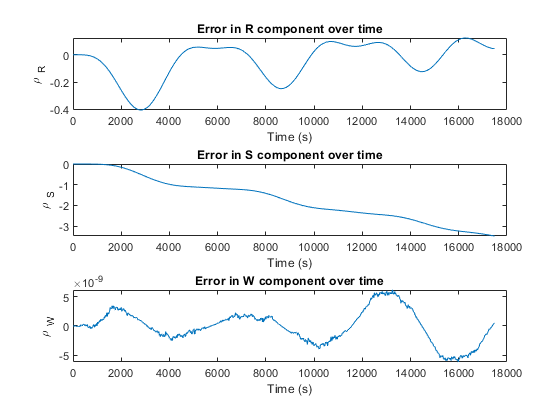

Problem 4
clear
clc
mu = 398600.4415;
a = 7000;
e = 0;
i = deg2rad(75);
raan = 0;
argl = 0;
rhoi = [25 0 0]';
rhodi = [-1 0 0]';
[rt,vt] = oe2rv(mu,a,e,i,raan,0,argl);
R = rt./norm(rt);
c = cross(rt,vt);
W = c./norm(c);
S = cross(W,R);
Qrswijk = [R S W];
rhoijk = Qrswijk*rhoi;
rhodijk = Qrswijk*rhodi;
disp('4.1 The inertial relative position in ijk is');
disp(rhoijk);
disp('4.1 The inertial relative velocity in ijk is');
disp(rhodijk);
omega = norm(c)/(norm(rt)^2);
omega = [0 0 omega]';
rhodni = rhodi - (cross(omega,rhoi));
disp('4.2 The non-inertial relative velocity in RSW is');
disp(rhodni);
P = 2*pi*sqrt(a^3/mu);
time = 0:20:3*P;
y0t = [rt; vt];
y0c = y0t + 0.001.*[rhoijk; rhodijk];
odeoptions = odeset('RelTol', 1e-10,'AbsTol',1e-20);
[~,Yt] = ode45(@twobody,time,y0t,odeoptions);
[t,Yc] = ode45(@twobody,time,y0c,odeoptions);
for i = 1:length(time)
Ytr = Yt(:,1:3);
Ycr = Yc(:,1:3);
Ytv = Yt(:,4:6);
Ycv = Yc(:,4:6);
R = Ytr(i,1:3)./norm(Ytr(i,1:3));
c = cross(Ytr(i,1:3),Ytv(i,1:3));
W = c./norm(c);
S = cross(W,R);
Qrswijk = [R' S' W'];
Ytrrsw(i,:) = Qrswijk'*Ytr(i,:)';
Ycrrsw(i,:) = Qrswijk'*Ycr(i,:)';
end
x = Ycrrsw(:,1) - Ytrrsw(:,1);
y = Ycrrsw(:,2) - Ytrrsw(:,2);
x = x*1000;
y = y*1000;
figure(1);
scatter(y,x)
xlabel('y in meters')
ylabel('x in meters')
po = rhoi;
pdo = rhodni;
n = 2*pi/P;
pt = zeros(3,length(time));
dt = zeros(3,length(time));
i = 1;
for t = 0:20:3*P
phipp = [4-3*cos(n*t) 0 0;
6*(sin(n*t)-n*t) 1 0;
0 0 cos(n*t)];
phipd = [sin(n*t)/n 2*(1-cos(n*t))/n 0;
2*(cos(n*t)-1)/n (4*sin(n*t)-3*n*t)/n 0;
0 0 sin(n*t)/n];
phidp = [3*n*sin(n*t) 0 0;
6*n*(cos(n*t)-1) 0 0;
0 0 -n*sin(n*t)];
phidd = [cos(n*t) 2*sin(n*t) 0;
-2*sin(n*t) 4*cos(n*t)-3 0;
0 0 cos(n*t)];
pt(1:3,i) = phipp*po + phipd*pdo;
dt(1:3,i) = phidp*po + phidd*pdo;
i = i+1;
end
pt = pt';
e = (Ycrrsw - Ytrrsw)*1000 - pt;
figure(2);
subplot(3,1,1)
plot(time, e(:,1))
title('Error in R component over time')
xlabel('Time (s)')
ylabel('\rho _{R}')
hold on
subplot(3,1,2)
plot(time, e(:,2))
title('Error in S component over time')
xlabel('Time (s)')
ylabel('\rho _{S}')
subplot(3,1,3)
plot(time, e(:,3))
title('Error in W component over time')
xlabel('Time (s)')
ylabel('\rho _{W}')
ef = norm(e(length(e),:));
message = ['4.5 The final magnitude of error is ', num2str(ef), ' meters.'];
disp(message);
disp('4.6 The CW equations are quite accurate in this case. The error is less than a quarter of a percent of the magnitude of the relative position vector.');
4.1 The inertial relative position in ijk is
25
0
0
4.1 The inertial relative velocity in ijk is
-1
0
0
4.2 The non-inertial relative velocity in RSW is
-1.0000
-0.0270
0
4.5 The final magnitude of error is 3.4826 meters.
4.6 The CW equations are quite accurate in this case. The error is less than a quarter of a percent of the magnitude of the relative position vector.
 